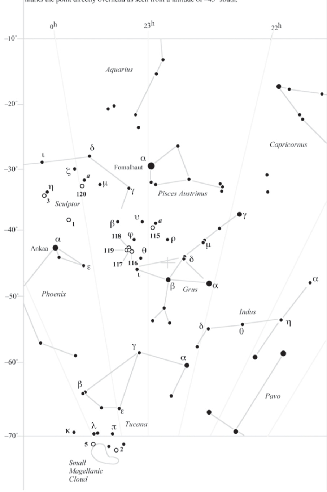
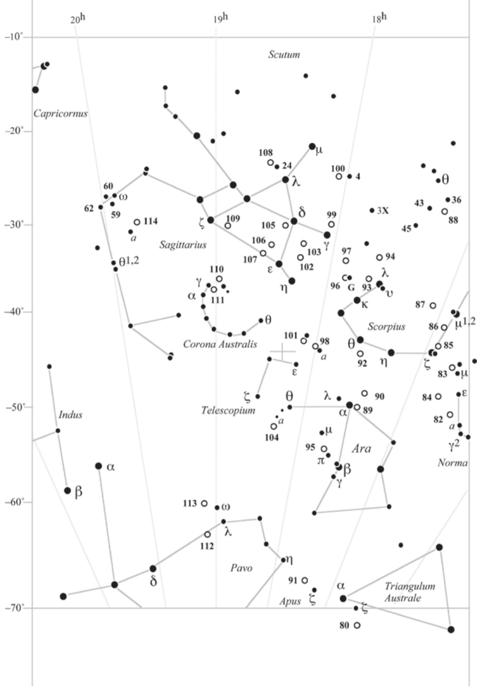
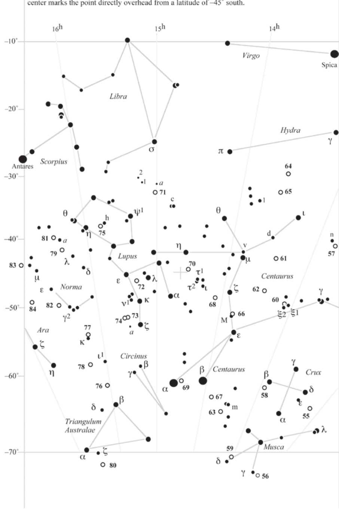

玉夫座雪茄星系 · Sculptor Galaxy (NGC 55)
概述 | Overview
NGC 55 is a magnificent side-on spiral galaxy residing in the southern constellation Sculptor, often described as a cosmic cigar blazing across the night sky. This stunning stellar island spans approximately 75,000 light-years, comparable in size to our own Milky Way, yet oriented in such a way that we observe it perfectly edge-on from our vantage point on Earth.
NGC 55是一颗壮丽的侧向旋涡星系，坐落于南天玉夫座之中，常被描述为划过夜空的一支宇宙级雪茄。这座绚烂的恒星之岛跨度约75,000光年，大小与我们的银河系相当，但由于其独特的方位，我们从地球的角度能够完美地以侧向视角观测它。
"This galaxy presents itself as a magnificent needle of light, its elongated structure revealing the intricate dust lanes and star-forming regions that trace its galactic plane."
“这个星系呈现出壮丽的针状光芒，其细长的结构揭示了沿着星系平面的复杂尘埃带和恒星形成区域。”
物理特性 | Physical Characteristics
作为玉夫座星系群的重要成员，NGC 55距离我们约600万至700万光年。尽管其侧向视角让我们难以辨认其旋臂结构，但望远镜却能揭示其表面令人惊叹的细节——密布的气泡状发射区域和起伏的星盘纹理。
"The galaxy's surface is peppered with emission nebulae and star-forming bubbles, testament to the violent and beautiful processes of stellar birth occurring within its bounds."
“星系的表面密布着发射星云和恒星形成气泡，这证明了其内部正在进行的剧烈而美丽的恒星诞生过程。”
| 参数 | Parameter | 值 | Value |
|---|---|---|---|
| 距离 | Distance | 600万-700万光年 | 6-7 million ly |
| 类型 | Type | SB(s)m 侧向旋涡星系 | SB(s)m edge-on spiral |
| 视直径 | Apparent Diameter | 32′ × 9′ | 32′ × 9′ |
| 视星等 | Apparent Magnitude | 8.0 | 8.0 |
| 所在星座 | Constellation | 玉夫座 | Sculptor |
| 赤经 | Right Ascension | 00h 14.9m | 00h 14.9m |
| 赤纬 | Declination | −39° 11′ | −39° 11′ |
观测指南 | Observation Guide
对于南半球的天文爱好者而言，NGC 55是一个不可多得的观测目标。最佳的观测季节集中在每年的十月至十二月，此时它会在午夜前后达到最高点，位于南纬地区的观测者可以毫无遮挡地欣赏其风采。
"From a latitude of −45°, the galaxy transits at around 11 p.m., marking the point directly overhead—a celestial gift for patient observers equipped with moderate apertures."
“从南纬45°观测，该星系在约晚上11点过境，标记着天顶正上方的位置——这是对装备中等口径望远镜的耐心观测者的天赐礼物。”

使用8英寸（约200mm）口径的望远镜，配合中等放大倍率，你将能够清晰地分辨出NGC 55那细长的雪茄外形，以及沿着其边缘可见的明亮恒星形成区。大型天文相机的感光元件更能捕捉到其内部结构中那些神秘的气泡状特征——那是超新星爆炸和年轻恒星群强烈辐射的杰作。

观测体验 | Observing Experience
Gazing upon NGC 55 through a telescope is an experience that transcends mere astronomical observation—it is a communion with cosmic history itself. As your eye traces the elongated glow of this celestial cigar, you are witnessing not just a galaxy, but a living tapestry of creation and destruction playing out across hundreds of thousands of light-years.
通过望远镜凝视NGC 55是一种超越普通天文观测的体验——这是与宇宙历史本身的交融。当你用目光追踪这支天界雪茄的细长光芒时，你所见证的不仅仅是一个星系，而是一幅在数十万光年间展开的创造与毁灭的活生生的织锦。
"The subtle undulations along its disk suggest buried spiral structure, tantalizing hints of the galaxy's true three-dimensional form that we can only imagine from our two-dimensional perspective."
“其星盘上微妙的起伏暗示着隐藏的旋涡结构，这些诱人的线索指向星系的真实三维形态——而我们只能从二维视角中想象它的全貌。”
在目镜后，你首先会被它令人窒息的亮度所震撼。尽管NGC 55的视星等仅为8等，但它的表面积积极大，光芒在视网膜上铺展开来，形成一条几乎覆盖整个视野的银色河流。调整至更高倍率后，那些沿着星系边缘若隐若现的明亮节点开始浮现——每一个光点都是数百万颗年轻恒星组成的巨大星协。

而在星系核心区域之外，更令人屏息凝视的是那些散布在星盘上的黑暗尘埃带。它们如同宇宙级的手指，轻轻拨动着光的琴弦，在NGC 55的光芒中切割出细腻的阴影脉络。当你以为已经捕捉到它的全部奥秘时，望远镜的视野边缘突然出现了一个模糊的伴星系轮廓——那是NGC 54，一颗若隐若现的宇宙同伴...
继续探索：NGC 253 · 银币星系 | NGC 300 · 玉夫座螺旋星系
注：本文图片引用自原著《The Caldwell Objects》，仅供学习研究使用。
🔒 受限于篇幅，本文仅展示部分样章。O'Meara 先生完整的观测手记、实测数据及未公开的独家配图，请参阅原著双语典藏版。
👉 立即在闲鱼获取《DEEP-SKY COMPANIONS》中英双语高清典藏版